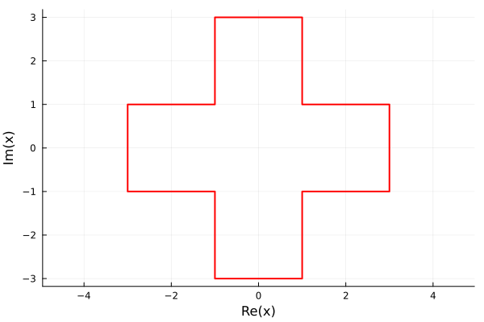
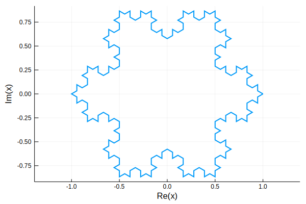
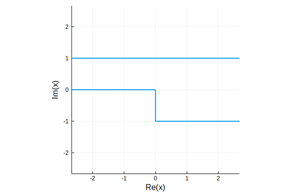
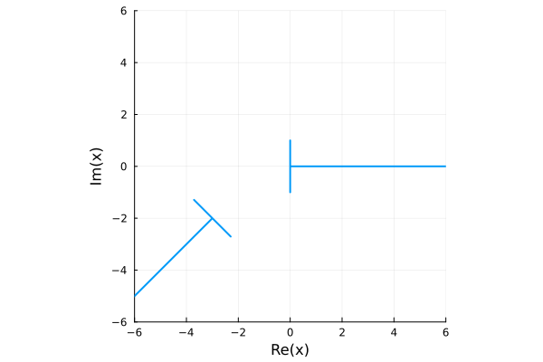

Polygons
There are two specialized implementations of the AbstractClosedPath type: CircularPolygon and the subtype Polygon, which implement the AbstractCircularPolygon and AbstractPolygon types, respectively.
CircularPolygon
A CircularPolygon is a closed path whose curve components are all of type Arc, Ray, and Segment. In contrast to the usual notion of a polygon, the path may be unbounded. Construct a value by calling CircularPolygon(c) with a vector or AbstractPath of curves of appropriate types; continuity and closure of the path are checked as necessary.
In addition to the usual methods for a ClosedPath, the following are implemented:
| Method | Description |
|---|---|
side | Alias for curve. |
winding(P,z) | Winding number of P relative to z. |
truncate(P) | Replace infinite sides with finite ones. |
Polygon
A Polygon is a closed path whose curve components are all of type Ray and Segment. In contrast to the usual notion of a polygon, the path may be unbounded. Construct a value by calling Polygon(c) with a vector or AbstractPath of curves of appropriate types; continuity and closure of the path are checked as necessary.
An alternative construction is to provide a vector of vertices. In place of an infinite vertex, you can supply a tuple of the angles of the two rays that meet there. See the examples section below.
In addition to the methods for the Abstract interface and CircularPolygon, the Polygon type offers
| Method | Description |
|---|---|
angles(P) | Interior angles of the polygon. |
Angles at a finite vertex are in the interval $(0,2\pi]$, while angles at an infinite vertex are in $[-2\pi,0]$, representing the angle at the pole of the Riemann sphere.
Two additional special polygon constructors are defined:
| Method | Description |
|---|---|
rectangle(xlim,ylim) or rectangle(z1,z2) | Construct an axes-aligned rectangle. |
n_gon(n) | Construct a regular n-gon with unit vertices. |
Examples
A big plus:
box = [1-1im, 3-1im, 3+1im]
plus = Polygon([box; 1im*box; -box; -1im*box])
using ComplexPlots, Plots
default(linewidth=2,legend=false)
plot(plus, color=:red)
A Koch snowflake:
v = vertices(n_gon(3));
pattern = [1; (v .- v[1]) / (v[1] - v[3])/3 .+ 2/3 ];
koch(a,b) = b .+ (a - b) * pattern;
for m = 1:3
@show n = length(v);
global v = vcat( [koch(v[k], v[mod(k, n) + 1]) for k in 1:n]... );
end
plot(Polygon(v))n = length(v) = 3
n = length(v) = 12
n = length(v) = 48
Infinite channel with a step, using tuples to specify the angles of rays going to infinity:
p = Polygon([0, -1im, (0,0), 1im, (pi,pi)])Polygon with 5 vertices:
Float16(0.0) - Float16(0.0)im, interior angle 1.5π
Float16(0.0) - Float16(1.0)im, interior angle 0.5π
Inf16, interior angle 0.0π
Float16(0.0) + Float16(1.0)im, interior angle 1.0π
Inf16, interior angle 0.0πplot(p, xlims=[-5,5], ylims=[-5,5])
Infinite polygons can seem quite strange:
probe1 = [1, 0, 1im, -1im, 0];
probe2 = cispi(-3/4)*probe1 .- (3 + 2im);
plot( Polygon([probe1...,(0, -3π/4), probe2..., (-3π/4, 0)]) )
xlims!(-6, 6); ylims!(-6, 6)